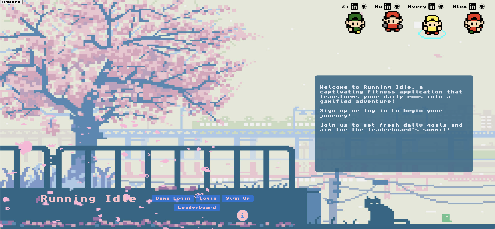
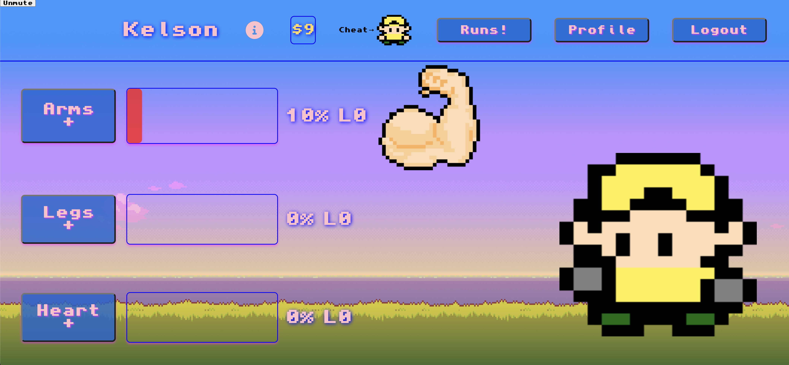

Running Idle: Gamified Running App
Built using: MongoDB, Express, React, Node.jsAs the backend lead, I worked with MongoDB (non-relational database) and Express as a backend.

In this project I also added a Google Maps API. Much of my time on the frontend was spent on the runs page and its map component.

The characters are able to be customized with upgradeable attire.

Characters earn points on the runs page by logging real world running/walking activity.